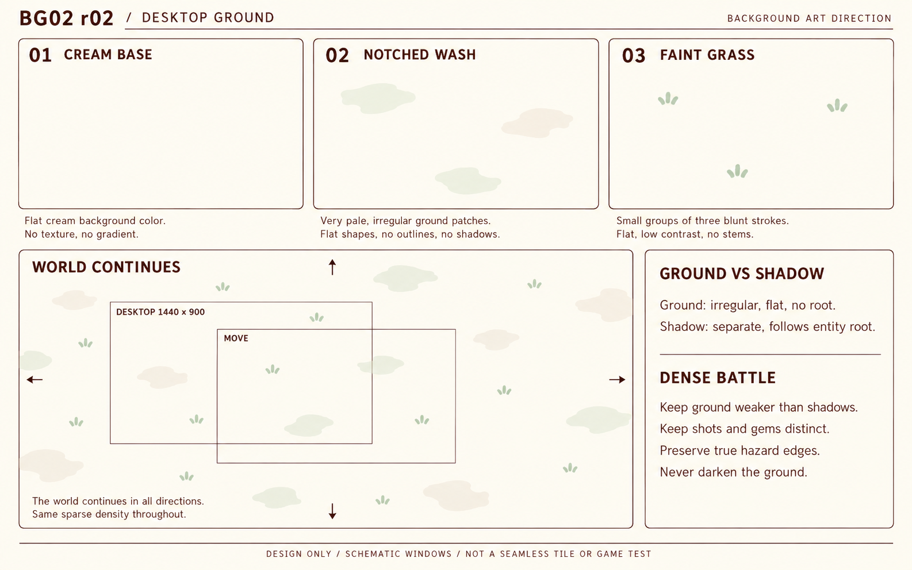

GeoGuard · 背景 r02 桌面优化
submitted／待主审。奶油开放地面保留，规则椭圆替换为极淡不对称缺口斑，减少并弱化短草。地面与实体阴影分开；手机暂缓。两板仅原画，不包含游戏代码或资源接入。
 BG01 r02 · 无UI/实体/影子/危区/掉落。独特纹样只在平面色斑轮廓中表达。
BG01 r02 · 无UI/实体/影子/危区/掉落。独特纹样只在平面色斑轮廓中表达。
BG02 r02 · 拆层、持续稀疏世界、地面/阴影区别及高密度战斗约束。框线为示意，1440×900是逻辑目标，不能量图校准。实际位图1586×992。尚未输出无缝纹理、透明源层、图集或设备测试。真实高密度桌面复合仍由主审转交master验证。r01历史封包保留不变；正式通过以主审书面记录为准。